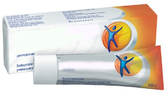

Desmadre farmacéutico en Madrid o cómo nuestros drogueros tacaños escondían el remedio de mayor venta en Europa para curar articulaciones!
Este fantástico remedio para curar atriculaciones ya lleva 2 años en el mercado europeo. Su eficacia aventaja a varias veces a los análogos, no sólo garantiza un efecto rápido a partir de la utilización, sino también recupera la función natural de las articulaciones, sin efectos colaterales (ningunos).
Para comparar dos medicamentos aquí presentamos un cuadro
|  Medicamentos farmacéuticos |
||
|---|---|---|
| Función: | Elimina causas de dolores, reinicio de las funciones de articulaciones a nivel celular | Efecto analgésico temporal |
| Efectos adicionales: |
º Recuperación de la corrente de sangre en las atriculaciones malas º Refuerzo de los vasos sanguineos º Corta el síndrome de dolor |
Faltan |
| Efectos colaterales, daño para el organismo |
Faltan | º Reacciones de la piel mientras se utiliza º La pustulosis º Broncoespasmos º Eritemas, dermatitis |
| Principio funcional: | Mejora la corriente de sangre donde se aplica y estimula las terminaciones nerviosas, lanza el proceso de recuperación celular | Anestesia el tegumento, a menudo no puede penentrar a la profundidad necesaria sin impacto adicional ultasónico. |
| Composición: | Componentes orgánicos naturales y vitaminas | Diclofenaco y otros componentes obtenidos químicamente |
| Número del ranking de ventas en Europa en el 1 trimestre de 2017: | 1(+53) | 2(-1) |
Este es un medicamento que permite olvidar en cotro plazo, sólo en 4 días, de los dolores en la espalda y las atriculaciones, y curar hasta los casos muy graves durante un par de meses.
El remedio contiene sólo productos naturales de abicultura. La crema se aplica en el lugar de problema y ayuda deshacerse del dolor en la espalda y las articulaciones. El proceso de recuperación no demanda operaciones.
Sólo en un uso se activan cerca de 930 000 células que aprovechan la corriente de sangre, así pasa el tratamiento. Lo más importante es mantener la consistencia.
ha cometido un golpe en Europa entre medicamentos para curar articulaciones. Todavía no había ningún remedio tan efectivo y útil. Aparición en 2017, pero a esto antecedieron 6 años de ensayos clínicos. Casi al mismo tiempo cuando aparició en el mercado superó ampliamente los análogos y hoy día es un remedio de mayor venta para curar articulaciones.
¿Yqué pasa en España?
Todavía no está disponible en farmacias españolas (y parece que no estará). A pesar de que tuvo éxito durante ensayos clínicos en mejores laboratorios y obtuvo toda la certificación necesaria. ¿Por qué esto sucede con el remedio tan único y efectivo?
Entrevistamos al fundador de una gran cadena de farmacias enMadrid– German Abramov, y aquí está lo que nos dijo:
- Señor Abramov, ¿cómo puede comentar el hecho de que el remedio tan popular en toda Europa todavía no está disponible en droguerías de España? ¿Lo conoce el medicamento?
- Sí, lo conozco. es un buen tratamiento. Es verdad que ayuda volver los vasos a su función normal en corto plazo. Lo que pasa es que lo vendíamos durante casi un mes, pero tuvimos que retirarlo de mercado, ya que no era aprovechable. Creo que lo mismo pasó con otras farmacias.
Hay que comprender que las farmacias son ante todo organizaciones comerciales y como otras tiendas tienen como objetivo ganar el beneficio máximo. Sí, tenemos una lista de medicamentos que hay que vender (la lista está realizada por el estado), pero no la entra.
- se vendió mal?
- Al contrario, demasiado bien, igual con un alto sobreprecio. Lo que pasa es que los remedios para curar articulaciones producen mucho beneficio teniendo en cuenta cuantos son los enfermos. recupera la función natural de las articulaciones que había tenido una persona antes de la enfermedad. Como consecuencia la gente se cura y ya no vuelve a la farmacia para comprar remedios analógicos que sólo eliminan el dolor para un rato y luego hay que volver a comprar este tratamiento otra vez. Si se utiliza no hay que hacerlo. Como resultado las farmacias sufren pérdidad vitales.
¿Y para qué vender lo que no es beneficioso? Sí, tal vez no sea muy moral, pero son sólo negocios.
¡Y es verdad!
¿Por qué no vender algo con efecto temporal? Asimismo la gente va a volver y volver a comprar. Y es terrible. Y lo que es más divrtido es que esta situación es típica para todas las comunidades de España. No se puede encontrar en las farmacias de España, y no es porque no ayuda, sino al contrario, es demasiado efectivo, por extraño que suene. Y no se puede hacer nada co esto, la ley está con los farmacéuticos.
Pedimos darnos comentarios sobre el tratamiento de reumatólogo benemérito, Andréy Beliayev

Profesor de medicina, Andréy Beliayev
"...Lo de la función de este medicamento, la respuesta es simple: al recuperar la circulación de sangre del artículo, lo curamos!
Mucha gente considera por error que después de 45 años es casi imposible recuperar la circulación de sangre.
La gente mayor de 40 años a menudo sufre (con la edad) de los mismos problemas: osteocondrosis, escoliosis, quebradura, radiculitis, pinzamiento y otros. Esas enfermedades agotan y no dejan vivir. Muchos de ellos lloran y sufren del dolor, no pueden mover rápido por esos fuertes dolores, a algunos cuesta caminar. Aunque sea la gente normal, no deportistas, ni personas con discapacidad. Quejan ¿qué he hecho para merecer esto? ¿por qué yo?".
¡PERO! Que no quejemos, sino recuperemos la circulación de sangre.
Hasta hace poco el método más efectivo para tratar las articulaciones ha sido un comlejo de ejercicios aparatos especiales, pero ha sido largo y dificil. A la gente le dolía y costaba mucho, no tuvo suficiente fuerza para entrenar.
A tales personas conviene un método más facil de utilizar "".
Con el apoyo del Ministerio de Salud se ha hecho una encuesta que está por encima de todas nuestras esperanzas
Encuesta del Ministerio de Salud:¿cómo se ha deshecho de los problemas con las articulaciones?
23%
47%
8%
17%
5%
Llevamos mucho tiempo utilizando en práctica y hemos obtenido pruebas de su eficacia. Los ensayos clínicos habían probado la seguridad de este remedio natural, por eso lo recomiendo a ello y no a los anestéticos sintéticos para alimentar a los comerciantes..."
Ya que no se vende más en farmacias por el bajo nivel de rentabilidad, el productor para atraer la atención de la gente con sus fuerzas tomó medidas extremas, al establecer como una oferta temporal un precio con descuento por un embalaje.
al precio con descuento está disponible a todos los residentes de España hasta (inclusivamente). Es hasta este día es necesario hacer un pedido en la página web
Es suficiente dejar sus contactos para que le consulten por todas las preguntas que le interesan.
¡Es importante! Los investigadores han demostrado que julio es el mejor tiempo para empezar el tratamiento de articulaciones, porque la temperatura normaliza, lo que ayuda la penetración de los componentes del remedio a 45% más rápido que en cualquiera otra estación del año. La recuperación de las funciones de organismo y el tratamiento de las articulaciones están 100% garantizados durante todo el curso de tratamiento. En nuestra página web usted puede encontrar la descripción detallada delmedicamento, su composición y también los artículos sobre los síntomas y casos de utilización.
Tengo un trabajo físico muy duro. Antes me dolían los artículos todo el rato. Leí muchas opiniones positivas sobre y la pedí. No esperaba ningún resultado rápido, pero al día siguiente me sentí mucho mejor. Me hice más activo y las articulaciones me dejaron a doler. ¡La recomiendo a todos!
También la entrega en Madridha sido muy rápida.

Pedí hace dos meses para mi esposa. Ella sufría de dolores en la espalda. Ahora dice que todo el dolor se ha ido completamente. Después del curso no sentió ni una vez ningún dolor. Estoy muy contento de que está mejor y se encarga más de la casa :)

Me pedí el curso porque me duelen constántemente las rodillas. Estoy feliz que lo he comprado al precio de oferta por sólo un euro!

Sé que mi colega utilizaba y me la recomendaba mucho. Yo también me noté que dejó de cojear. Ahora he hecho un pedido de la crema para mí y mi mujer mientras tienen oferta. ¡Gracias!
.jpg)
¡Conozco este tratamiendo de milagro! Durante los últimos 5 años me probé todas las cremas y remedios, pero nada me ayudó. ¡Que privilegio que mi hermana me aconsejó y me ha olvidado de problemas con las espalda y las articulaciones de mis piernas para siempre!
¡Es una crema genial La llevo una semana aplicándola en mis articulaciones y ya me siento mucho mejor. Lo voy a continuar haciéndolo para recuperarlas totalmente.

¡Lo confirmo! – es un super remedio. El último año sufro mucho de los problemas con articulaciones. Hace poco conocí y lo pedí. Me sentí mejor después de una semana de utilización. Ahora vivo como un hombre normal. Para ser honesto no me esperaba nada de que me ayudara. ¡Lo recomiendo a todos! Este remedio os va a sorprender.
Me lo pidió mi hija. Nunca creía en estos remedios modernos, pero ahora tengo que admitir ¡que es el mejor tratamiento que me ha ayudado!
Gracias. ¡Pude pedirlo con oferta! En realidad me lo costó un euro, la entrega fue muy rápida aMadridcon correo, muy cómodo. Voy a probar.
La espalda me dolía toda mi vida. Es mi problema genético. Usé los servicios de masajistas, doctores y sanadores tradicionales. Los últimos años ni podía atarme los cordones por el dolor. Leí mucho sobre , pero tuve miedo de hacer un pedido. Al final lo hice y siento mucho que no lo había hecho antes. Mi espalda no se sentía mejor desde mi 17 años. Lo recomiendo a probar.
Me pedí , el operador me dijo que quedaban pocos embalajes de oferta. Si queréis pedirlo a precio con descuento, ¡tened prisa!
Los doctores ya llevan 3 años cunándome. Espero que me ayude. He hecho un pedido, la administradora me ha consultado con cortesia por teléfono. Voy a esperar mi pedido.
Desde pequeño sufría de la artritis, desafortunadamente, todos los medicamentos y procedimientos sólo me pudieron aligerar el dolor por un rato y ya. Mis compañeros de clase me daban envidia al poder jugar fútbol, baloncesto y otros juegos. Sólo ahora, teniendo 38 años, estoy capaz de jugar cualquier juego, porque me deshice de esta enfermedad con la ayuda de . Hoy día disfurto pequeñas carreras y vivo una vida activa.
Dejé el levantamiento de pesos, ya que mi salud no me permitía seguir. Ellos que lo practican me tienen que entender: después de las competiciones siempre estaba hecho polvo. Luego trabajaba en la obra, pues, mis articulaciones eran como si pertenecieran a alguien de 70 años. Mi doctor me aconsejó pasar un tratamiento con , leí las opiniones que fueron bastante buenas, me lo compré y empecé a tratarme. En realidad con tiempo mis articulaciones volvieron a lo normal. Hice una radiografía, todo el tejido se había recuperado.Claro que no vuelvo al gran deporte, pero igual voy a ir al gimnasio.
¡Pedidos ya y no vais a sentirlo!
Pedí este crema (es una pena que entonces no había ninguna oferta). Me la entregaron en Madridmuy rápido. Me quedé sorprendido del resultado. Todas las enfermedades de las articulaciones se fueron. Antes me dolían mucho la espalda y las rodillas.